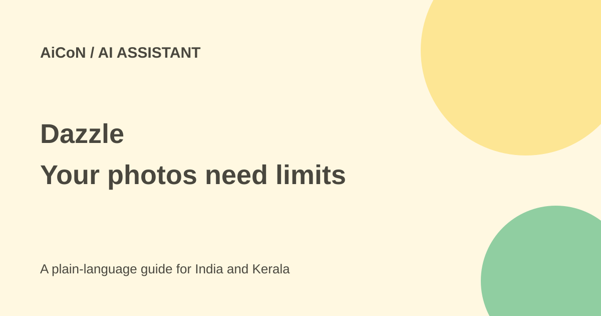

Dazzle: photo-based AI, invite access and privacy checks
Dazzle uses photos you choose to share to suggest and carry out tasks. It is invite-only, and a free app download does not mean that shopping, repairs or bookings are free.

What does Dazzle do?
Dazzle is a personal AI assistant that starts from photos and screenshots. The vendor says it can recognise useful context, such as an invitation, a product you like or something needing repair, then suggest a task. Its examples include shopping, scheduling, repair help, restaurant suggestions and travel planning.
These are vendor descriptions, not a guarantee that each service works in every country. A photograph can contain more information than you meant to share: faces, names, addresses, appointment details and location metadata. Choose the input as carefully as the requested task.
Access, India and the free verdict
The US App Store listing offers a free download and says to request an invite. This is not open access for every person who installs it. The Indian store page could not be verified during this check, so India availability remains unresolved. A failed page fetch is not proof that the app is unavailable in India.
The public evidence checked does not establish a universal price for every service or a complete India rollout. Free download is separate from the price of a purchased item, repair, ticket, hotel or future service plan. Review the actual offer and task cost before agreeing.
The privacy policy and terms say the service is not for users under 18. It is therefore not something to set up for a child merely because photos of family activities are among its examples.
How to try it carefully
- Read the official product page, current store listing and privacy policy. Confirm access in your own country.
- Request an invite through the official flow if offered. Do not assume downloading the app grants service access.
- Start with selected, non-sensitive photos instead of your entire library. The vendor says you can choose specific photos or grant no photo access.
- Check what it understood. For a flyer, confirm the date, time, place and person before using the suggestion.
- Before a purchase or booking, inspect the item, recipient, final price and cancellation conditions. The product page says complex actions need your approval.
- Review connected services and stop permissions you no longer need. Delete test photos and inspect available account controls.
Cloud processing and human review
The policy says selected media and associated metadata can be processed and shared with service providers and AI partners. It describes US handling and agreements that prohibit partners from training models on the supplied data. A no-public-training statement is not a promise of local-only processing.
The terms describe human verification and quality checks for some actions, with review routing managed by the service. Do not treat the assistant as a system in which no person can ever see any task information. Avoid sensitive client documents, health records, identity documents and private photographs of other people unless you have a clear reason and the right to share them.
Account access and deletion
The marketing page says Dazzle uses its own accounts and tools instead of broad access to your identity. The terms separately allow supported third-party accounts, such as calendars and cloud storage, through token-based connections like OAuth. These statements cover different routes. Check the permissions for the route you actually enable.
The terms say linked-service data and tokens are purged from active systems within 72 hours of disconnection, except legally required retention. Account deletion removes data from active databases, but encrypted backups may remain for a limited period until overwritten. Deleting an account is not necessarily instant removal from every backup.
For Kerala users
A school flyer or a shopping screenshot could be a useful low-risk test. Check Malayalam names, local dates and service coverage rather than relying on an attractive demo. A US product example does not prove that a repair provider or booking route is available in your town.
What changed since the original post?
The 30 September post focused on camera-roll personalisation. This guide adds invite access, the unresolved India check, cloud and human processing, connected-account terms and backup retention. Photo-based context is not the same as private offline inference.
Frequently asked questions
Is every errand free?
No. A free download does not cover goods, services or bookings.
Must I share my whole library?
The vendor says selected photos or no photo access are possible.
Is India access confirmed?
No. Verify your own store and invite access.
Was an account created here?
No. This guide used public product, policy and store sources.
Sources: Product and access · Privacy policy · Terms of service · US App Store listing. Checked 7 October 2026.